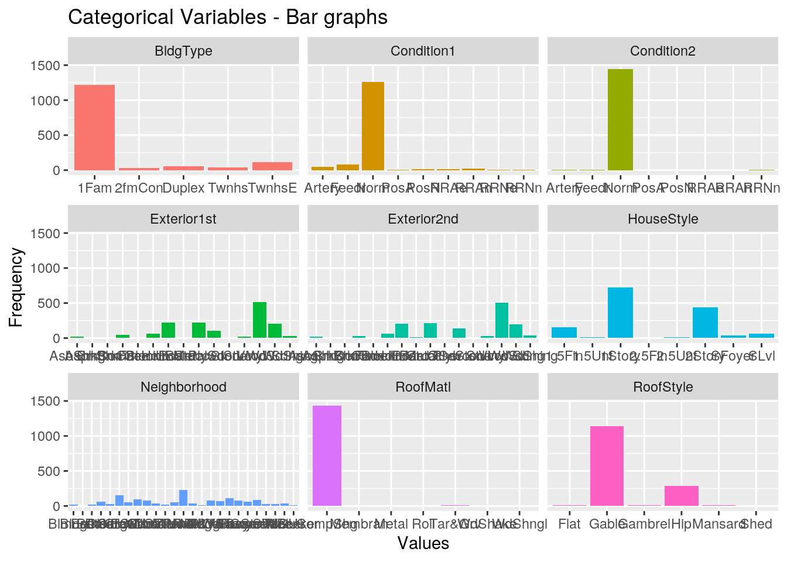
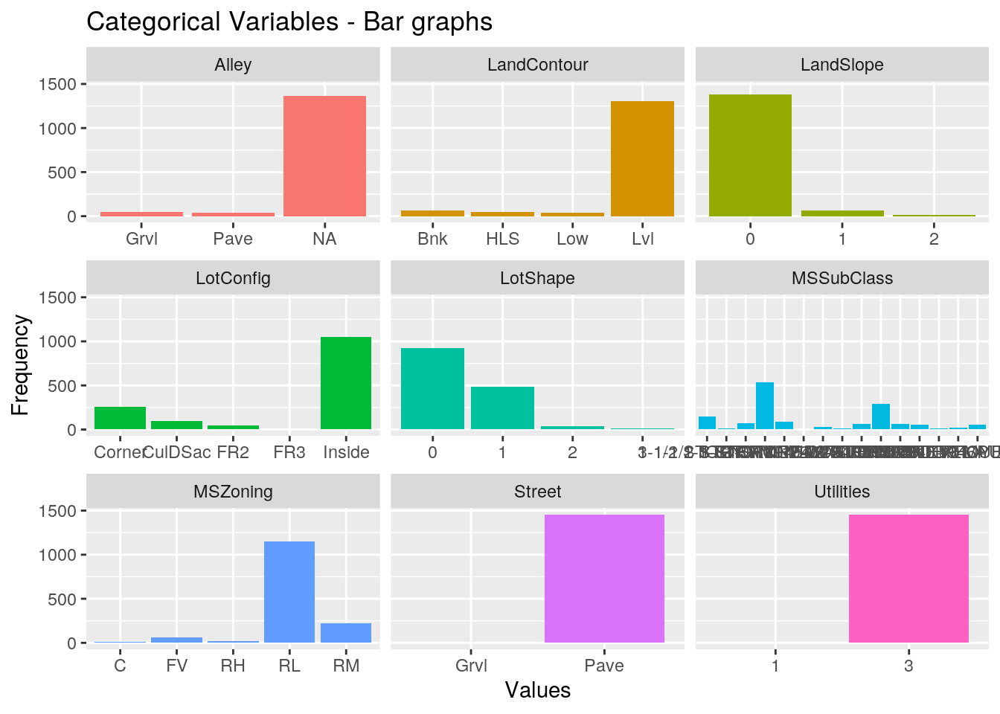
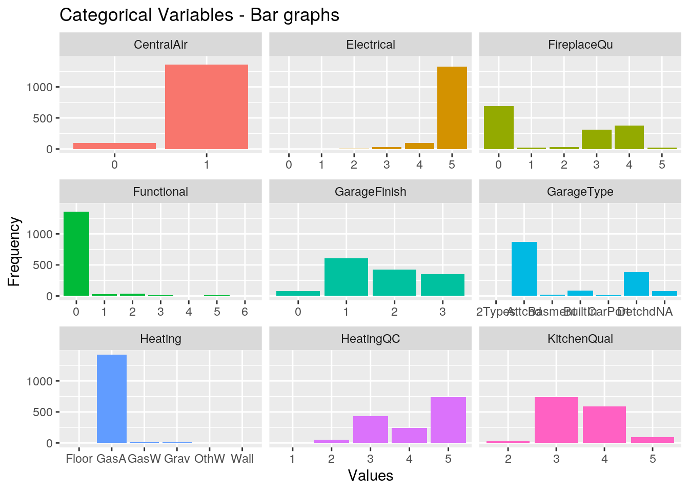
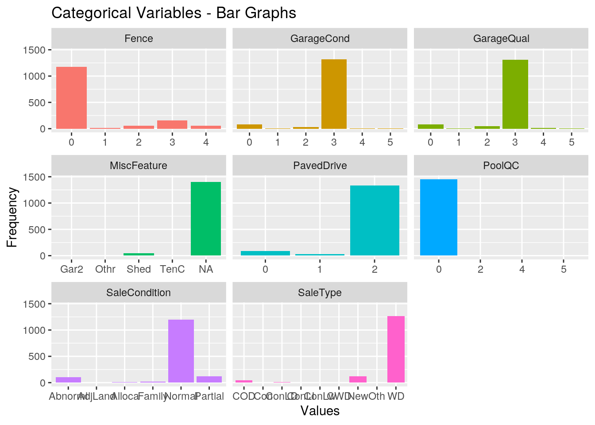
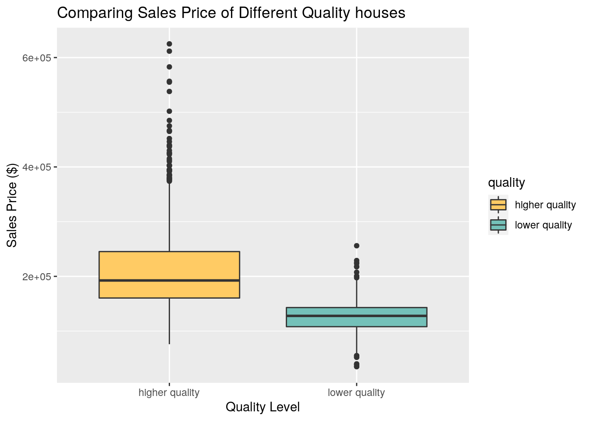

Analysis & Hypotheses
Summary
We want to analyze the housing sales prices to analyze which variables influence the sales price the most. We also want to train a model that predicts the sales price of a house given the variables necessary, which will be completed under the Modeling Page
To begin our analysis of the data we will create correlation matrices, visualize individual variables, and look at ANOVA outputs to see which variables appear to contribute the most to predicting sales price.
Importing Libraries + Loading Data
library(dplyr)
library(tidyr)
library(ggplot2)
library(readr)
library(tidyverse)
#install.packages("corrplot")
library(corrplot)
data <- read_csv("~/SDS322E/final_project_homepage/clean_train.csv")
#data <- na.omit(data)
head(data)## # A tibble: 6 × 81
## Id MSSubClass MSZon…¹ LotFr…² LotArea Street Alley LotSh…³ LandC…⁴ Utili…⁵
## <dbl> <chr> <chr> <dbl> <dbl> <chr> <chr> <dbl> <chr> <dbl>
## 1 1 2-STORY 19… RL 65 8450 Pave <NA> 0 Lvl 3
## 2 2 1-STORY 19… RL 80 9600 Pave <NA> 0 Lvl 3
## 3 3 2-STORY 19… RL 68 11250 Pave <NA> 1 Lvl 3
## 4 4 2-STORY 19… RL 60 9550 Pave <NA> 1 Lvl 3
## 5 5 2-STORY 19… RL 84 14260 Pave <NA> 1 Lvl 3
## 6 6 1-1/2 STOR… RL 85 14115 Pave <NA> 1 Lvl 3
## # … with 71 more variables: LotConfig <chr>, LandSlope <dbl>,
## # Neighborhood <chr>, Condition1 <chr>, Condition2 <chr>, BldgType <chr>,
## # HouseStyle <chr>, OverallQual <dbl>, OverallCond <dbl>, YearBuilt <dbl>,
## # YearRemodAdd <dbl>, RoofStyle <chr>, RoofMatl <chr>, Exterior1st <chr>,
## # Exterior2nd <chr>, MasVnrType <chr>, MasVnrArea <dbl>, ExterQual <dbl>,
## # ExterCond <dbl>, Foundation <chr>, BsmtQual <dbl>, BsmtCond <dbl>,
## # BsmtExposure <dbl>, BsmtFinType1 <dbl>, BsmtFinSF1 <dbl>, …Visualization
Histogram of SalePrice (dependent variable):
data %>%
ggplot(aes(x=SalePrice)) +
geom_histogram(color = "#e49700", fill = "#fffbee") +
labs(
title = "Histogram of SalesPrice in Housing Data",
x = "Sales Price in $USD",
y = "Count"
) +
theme_classic() +
theme(
plot.title = element_text(color = "#e49700", size = 16, face = "bold"),
plot.subtitle = element_text(size = 10, face = "bold"),
plot.caption = element_text(face = "italic")
)## `stat_bin()` using `bins = 30`. Pick better value with `binwidth`.head(data)## # A tibble: 6 × 81
## Id MSSubClass MSZon…¹ LotFr…² LotArea Street Alley LotSh…³ LandC…⁴ Utili…⁵
## <dbl> <chr> <chr> <dbl> <dbl> <chr> <chr> <dbl> <chr> <dbl>
## 1 1 2-STORY 19… RL 65 8450 Pave <NA> 0 Lvl 3
## 2 2 1-STORY 19… RL 80 9600 Pave <NA> 0 Lvl 3
## 3 3 2-STORY 19… RL 68 11250 Pave <NA> 1 Lvl 3
## 4 4 2-STORY 19… RL 60 9550 Pave <NA> 1 Lvl 3
## 5 5 2-STORY 19… RL 84 14260 Pave <NA> 1 Lvl 3
## 6 6 1-1/2 STOR… RL 85 14115 Pave <NA> 1 Lvl 3
## # … with 71 more variables: LotConfig <chr>, LandSlope <dbl>,
## # Neighborhood <chr>, Condition1 <chr>, Condition2 <chr>, BldgType <chr>,
## # HouseStyle <chr>, OverallQual <dbl>, OverallCond <dbl>, YearBuilt <dbl>,
## # YearRemodAdd <dbl>, RoofStyle <chr>, RoofMatl <chr>, Exterior1st <chr>,
## # Exterior2nd <chr>, MasVnrType <chr>, MasVnrArea <dbl>, ExterQual <dbl>,
## # ExterCond <dbl>, Foundation <chr>, BsmtQual <dbl>, BsmtCond <dbl>,
## # BsmtExposure <dbl>, BsmtFinType1 <dbl>, BsmtFinSF1 <dbl>, …As you can see, the sales price of the homes is slightly right-skewed ### Correlation Plot of numeric variables
# Get only the numeric data
numeric_only <- data %>% select_if(is.numeric)
res <- cor(numeric_only)
#res %>% pivot_longer(c(0,10), names_to = "var2")
corrplot(
res,
tl.cex = .5,
col = colorRampPalette(c("#ffb118","white", "#3c726d"))(100),
tl.col = "#3c726d"
)### Bar plots of categorical variables
# Get only the categorical data
categorical <- data %>% select_if(negate(is.numeric))
categorical %>% glimpse()## Rows: 1,456
## Columns: 23
## $ MSSubClass <chr> "2-STORY 1946+", "1-STORY 1946+", "2-STORY 1946+", "2-ST…
## $ MSZoning <chr> "RL", "RL", "RL", "RL", "RL", "RL", "RL", "RL", "RM", "R…
## $ Street <chr> "Pave", "Pave", "Pave", "Pave", "Pave", "Pave", "Pave", …
## $ Alley <chr> NA, NA, NA, NA, NA, NA, NA, NA, NA, NA, NA, NA, NA, NA, …
## $ LandContour <chr> "Lvl", "Lvl", "Lvl", "Lvl", "Lvl", "Lvl", "Lvl", "Lvl", …
## $ LotConfig <chr> "Inside", "FR2", "Inside", "Corner", "FR2", "Inside", "I…
## $ Neighborhood <chr> "CollgCr", "Veenker", "CollgCr", "Crawfor", "NoRidge", "…
## $ Condition1 <chr> "Norm", "Feedr", "Norm", "Norm", "Norm", "Norm", "Norm",…
## $ Condition2 <chr> "Norm", "Norm", "Norm", "Norm", "Norm", "Norm", "Norm", …
## $ BldgType <chr> "1Fam", "1Fam", "1Fam", "1Fam", "1Fam", "1Fam", "1Fam", …
## $ HouseStyle <chr> "2Story", "1Story", "2Story", "2Story", "2Story", "1.5Fi…
## $ RoofStyle <chr> "Gable", "Gable", "Gable", "Gable", "Gable", "Gable", "G…
## $ RoofMatl <chr> "CompShg", "CompShg", "CompShg", "CompShg", "CompShg", "…
## $ Exterior1st <chr> "VinylSd", "MetalSd", "VinylSd", "Wd Sdng", "VinylSd", "…
## $ Exterior2nd <chr> "VinylSd", "MetalSd", "VinylSd", "WdShing", "VinylSd", "…
## $ MasVnrType <chr> "BrkFace", "None", "BrkFace", "None", "BrkFace", "None",…
## $ Foundation <chr> "PConc", "CBlock", "PConc", "BrkTil", "PConc", "Wood", "…
## $ Heating <chr> "GasA", "GasA", "GasA", "GasA", "GasA", "GasA", "GasA", …
## $ GarageType <chr> "Attchd", "Attchd", "Attchd", "Detchd", "Attchd", "Attch…
## $ MiscFeature <chr> NA, NA, NA, NA, NA, "Shed", NA, "Shed", NA, NA, NA, NA, …
## $ MoSold <chr> "Feb", "May", "Sept", "Feb", "Dec", "Oct", "Aug", "Nov",…
## $ SaleType <chr> "WD", "WD", "WD", "WD", "WD", "WD", "WD", "WD", "WD", "W…
## $ SaleCondition <chr> "Normal", "Normal", "Normal", "Abnorml", "Normal", "Norm…data$MSSubClass <- as.factor(data$MSSubClass)
data$MSZoning <- as.factor(data$MSZoning)
data$Street <- as.factor(data$Street)
data$Alley <- as.factor(data$Alley)
data$LotShape <- as.factor(data$LotShape)
data$LandContour <- as.factor(data$LandContour)
data$Utilities <- as.factor(data$Utilities)
data$LotConfig <- as.factor(data$LotConfig)
data$LandSlope <- as.factor(data$LandSlope)
data$Neighborhood <- as.factor(data$Neighborhood)
data$Condition1 <- as.factor(data$Condition1)
data$Condition2 <- as.factor(data$Condition2)
data$BldgType <- as.factor(data$BldgType)
data$HouseStyle <- as.factor(data$HouseStyle)
data$RoofStyle <- as.factor(data$RoofStyle)
data$RoofMatl <- as.factor(data$RoofMatl)
data$Exterior1st <- as.factor(data$Exterior1st)
data$Exterior2nd <- as.factor(data$Exterior2nd)
data$MasVnrType <- as.factor(data$MasVnrType)
data$ExterQual <- as.factor(data$ExterQual)
data$ExterCond <- as.factor(data$ExterCond)
data$Foundation <- as.factor(data$Foundation)
data$BsmtQual <- as.factor(data$BsmtQual)
data$BsmtCond <- as.factor(data$BsmtCond)
data$BsmtExposure <- as.factor(data$BsmtExposure)
data$BsmtFinType1 <- as.factor(data$BsmtFinType1)
data$BsmtFinType2 <- as.factor(data$BsmtFinType2)
data$Heating <- as.factor(data$Heating)
data$HeatingQC <- as.factor(data$HeatingQC)
data$CentralAir <- as.factor(data$CentralAir)
data$Electrical <- as.factor(data$Electrical)
data$KitchenQual <- as.factor(data$KitchenQual)
data$Functional <- as.factor(data$Functional)
data$FireplaceQu <- as.factor(data$FireplaceQu)
data$GarageType <- as.factor(data$GarageType)
data$GarageFinish <- as.factor(data$GarageFinish)
data$GarageQual <- as.factor(data$GarageQual)
data$GarageCond <- as.factor(data$GarageCond)
data$PavedDrive <- as.factor(data$PavedDrive)
data$PoolQC <- as.factor(data$PoolQC)
data$Fence <- as.factor(data$Fence)
data$MiscFeature <- as.factor(data$MiscFeature)
data$SaleType <- as.factor(data$SaleType)
data$SaleCondition <- as.factor(data$SaleCondition)
factorial_variables <- c(2,3,6:17,22:26,28:34,36,40:43,54,56,58,59,61,64:66,73:75,79,80)
str(data[,factorial_variables])## tibble [1,456 × 44] (S3: tbl_df/tbl/data.frame)
## $ MSSubClass : Factor w/ 15 levels "1-1/2 STORY FIN",..: 10 4 10 9 10 1 4 10 1 7 ...
## $ MSZoning : Factor w/ 5 levels "C","FV","RH",..: 4 4 4 4 4 4 4 4 5 4 ...
## $ Street : Factor w/ 2 levels "Grvl","Pave": 2 2 2 2 2 2 2 2 2 2 ...
## $ Alley : Factor w/ 2 levels "Grvl","Pave": NA NA NA NA NA NA NA NA NA NA ...
## $ LotShape : Factor w/ 4 levels "0","1","2","3": 1 1 2 2 2 2 1 2 1 1 ...
## $ LandContour : Factor w/ 4 levels "Bnk","HLS","Low",..: 4 4 4 4 4 4 4 4 4 4 ...
## $ Utilities : Factor w/ 2 levels "1","3": 2 2 2 2 2 2 2 2 2 2 ...
## $ LotConfig : Factor w/ 5 levels "Corner","CulDSac",..: 5 3 5 1 3 5 5 1 5 1 ...
## $ LandSlope : Factor w/ 3 levels "0","1","2": 1 1 1 1 1 1 1 1 1 1 ...
## $ Neighborhood : Factor w/ 25 levels "Blmngtn","Blueste",..: 6 25 6 7 14 12 21 17 18 4 ...
## $ Condition1 : Factor w/ 9 levels "Artery","Feedr",..: 3 2 3 3 3 3 3 5 1 1 ...
## $ Condition2 : Factor w/ 8 levels "Artery","Feedr",..: 3 3 3 3 3 3 3 3 3 1 ...
## $ BldgType : Factor w/ 5 levels "1Fam","2fmCon",..: 1 1 1 1 1 1 1 1 1 2 ...
## $ HouseStyle : Factor w/ 8 levels "1.5Fin","1.5Unf",..: 6 3 6 6 6 1 3 6 1 2 ...
## $ RoofStyle : Factor w/ 6 levels "Flat","Gable",..: 2 2 2 2 2 2 2 2 2 2 ...
## $ RoofMatl : Factor w/ 7 levels "CompShg","Membran",..: 1 1 1 1 1 1 1 1 1 1 ...
## $ Exterior1st : Factor w/ 15 levels "AsbShng","AsphShn",..: 13 9 13 14 13 13 13 7 4 9 ...
## $ Exterior2nd : Factor w/ 16 levels "AsbShng","AsphShn",..: 14 9 14 16 14 14 14 7 16 9 ...
## $ MasVnrType : Factor w/ 4 levels "BrkCmn","BrkFace",..: 2 3 2 3 2 3 4 4 3 3 ...
## $ ExterQual : Factor w/ 4 levels "2","3","4","5": 3 2 3 2 3 2 3 2 2 2 ...
## $ ExterCond : Factor w/ 5 levels "1","2","3","4",..: 3 3 3 3 3 3 3 3 3 3 ...
## $ Foundation : Factor w/ 6 levels "BrkTil","CBlock",..: 3 2 3 1 3 6 3 2 1 1 ...
## $ BsmtQual : Factor w/ 5 levels "0","2","3","4",..: 4 4 4 3 4 4 5 4 3 3 ...
## $ BsmtCond : Factor w/ 5 levels "0","1","2","3",..: 4 4 4 5 4 4 4 4 4 4 ...
## $ BsmtExposure : Factor w/ 4 levels "0","1","2","3": 1 4 2 1 3 1 3 2 1 1 ...
## $ BsmtFinType1 : Factor w/ 7 levels "0","1","2","3",..: 7 6 7 6 7 7 7 6 2 7 ...
## $ BsmtFinType2 : Factor w/ 6 levels "0","1","3","4",..: 2 2 2 2 2 2 2 4 2 2 ...
## $ Heating : Factor w/ 6 levels "Floor","GasA",..: 2 2 2 2 2 2 2 2 2 2 ...
## $ HeatingQC : Factor w/ 5 levels "1","2","3","4",..: 5 5 5 4 5 5 5 5 4 5 ...
## $ CentralAir : Factor w/ 2 levels "0","1": 2 2 2 2 2 2 2 2 2 2 ...
## $ Electrical : Factor w/ 6 levels "0","1","2","3",..: 6 6 6 6 6 6 6 6 4 6 ...
## $ KitchenQual : Factor w/ 4 levels "2","3","4","5": 3 2 3 3 3 2 3 2 2 2 ...
## $ Functional : Factor w/ 7 levels "0","1","2","3",..: 1 1 1 1 1 1 1 1 2 1 ...
## $ FireplaceQu : Factor w/ 6 levels "0","1","2","3",..: 1 4 4 5 4 1 5 4 4 4 ...
## $ GarageType : Factor w/ 6 levels "2Types","Attchd",..: 2 2 2 6 2 2 2 2 6 2 ...
## $ GarageFinish : Factor w/ 4 levels "0","1","2","3": 3 3 3 2 3 2 3 3 2 3 ...
## $ GarageQual : Factor w/ 6 levels "0","1","2","3",..: 4 4 4 4 4 4 4 4 3 5 ...
## $ GarageCond : Factor w/ 6 levels "0","1","2","3",..: 4 4 4 4 4 4 4 4 4 4 ...
## $ PavedDrive : Factor w/ 3 levels "0","1","2": 3 3 3 3 3 3 3 3 3 3 ...
## $ PoolQC : Factor w/ 4 levels "0","2","4","5": 1 1 1 1 1 1 1 1 1 1 ...
## $ Fence : Factor w/ 5 levels "0","1","2","3",..: 1 1 1 1 1 4 1 1 1 1 ...
## $ MiscFeature : Factor w/ 4 levels "Gar2","Othr",..: NA NA NA NA NA 3 NA 3 NA NA ...
## $ SaleType : Factor w/ 9 levels "COD","Con","ConLD",..: 9 9 9 9 9 9 9 9 9 9 ...
## $ SaleCondition: Factor w/ 6 levels "Abnorml","AdjLand",..: 5 5 5 1 5 5 5 5 1 5 ...library(dplyr)
library(tidyr)
data %>%
gather(Attributes, value, factorial_variables[1:9]) %>%
ggplot(aes(x=value, fill=Attributes)) +
geom_bar(stat="count", show.legend = F) +
facet_wrap(~Attributes, scales="free_x") +
labs(x="Values", y="Frequency",
title="Categorical Variables - Bar graphs") +
scale_fill_discrete()## Warning: attributes are not identical across measure variables;
## they will be dropped
data %>%
gather(Attributes, value, factorial_variables[10:18]) %>%
ggplot(aes(x=value, fill=Attributes)) +
geom_bar(stat="count", show.legend = F) +
facet_wrap(~Attributes, scales="free_x") +
labs(x="Values", y="Frequency",
title="Categorical Variables - Bar graphs") +
scale_fill_discrete() ## Warning: attributes are not identical across measure variables;
## they will be dropped
data %>%
gather(Attributes, value, factorial_variables[28:36]) %>%
ggplot(aes(x=value, fill=Attributes)) +
geom_bar(stat="count", show.legend = F) +
facet_wrap(~Attributes, scales="free_x") +
labs(x="Values", y="Frequency",
title="Categorical Variables - Bar graphs") +
scale_fill_discrete()## Warning: attributes are not identical across measure variables;
## they will be dropped
data %>%
gather(Attributes, value, factorial_variables[37:44]) %>%
ggplot(aes(x=value, fill=Attributes)) +
geom_bar(stat="count", show.legend = F) +
facet_wrap(~Attributes, scales="free_x") +
labs(x="Values", y="Frequency",
title="Categorical Variables - Bar Graphs") +
scale_fill_discrete() ## Warning: attributes are not identical across measure variables;
## they will be dropped
data$MSSubClass <- as.factor(data$MSSubClass)
data$MSZoning <- as.factor(data$MSZoning)
data$Street <- as.factor(data$Street)
data$Alley <- as.factor(data$Alley)
data$LotShape <- as.factor(data$LotShape)
data$LandContour <- as.factor(data$LandContour)
data$Utilities <- as.factor(data$Utilities)
data$LotConfig <- as.factor(data$LotConfig)
data$LandSlope <- as.factor(data$LandSlope)
data$Neighborhood <- as.factor(data$Neighborhood)
data$Condition1 <- as.factor(data$Condition1)
data$Condition2 <- as.factor(data$Condition2)
data$BldgType <- as.factor(data$BldgType)
data$HouseStyle <- as.factor(data$HouseStyle)
data$RoofStyle <- as.factor(data$RoofStyle)
data$RoofMatl <- as.factor(data$RoofMatl)
data$Exterior1st <- as.factor(data$Exterior1st)
data$Exterior2nd <- as.factor(data$Exterior2nd)
data$MasVnrType <- as.factor(data$MasVnrType)
data$ExterQual <- as.factor(data$ExterQual)
data$ExterCond <- as.factor(data$ExterCond)
data$Foundation <- as.factor(data$Foundation)
data$BsmtQual <- as.factor(data$BsmtQual)
data$BsmtCond <- as.factor(data$BsmtCond)
data$BsmtExposure <- as.factor(data$BsmtExposure)
data$BsmtFinType1 <- as.factor(data$BsmtFinType1)
data$BsmtFinType2 <- as.factor(data$BsmtFinType2)
data$Heating <- as.factor(data$Heating)
data$HeatingQC <- as.factor(data$HeatingQC)
data$CentralAir <- as.factor(data$CentralAir)
data$Electrical <- as.factor(data$Electrical)
data$KitchenQual <- as.factor(data$KitchenQual)
data$Functional <- as.factor(data$Functional)
data$FireplaceQu <- as.factor(data$FireplaceQu)
data$GarageType <- as.factor(data$GarageType)
data$GarageFinish <- as.factor(data$GarageFinish)
data$GarageQual <- as.factor(data$GarageQual)
data$GarageCond <- as.factor(data$GarageCond)
data$PavedDrive <- as.factor(data$PavedDrive)
data$PoolQC <- as.factor(data$PoolQC)
data$Fence <- as.factor(data$Fence)
data$MiscFeature <- as.factor(data$MiscFeature)
data$SaleType <- as.factor(data$SaleType)
data$SaleCondition <- as.factor(data$SaleCondition)
factorial_variables <- c(2,3,6:17,22:26,28:34,36,40:43,54,56,58,59,61,64:66,73:75,79,80)
str(data[,factorial_variables])## tibble [1,456 × 44] (S3: tbl_df/tbl/data.frame)
## $ MSSubClass : Factor w/ 15 levels "1-1/2 STORY FIN",..: 10 4 10 9 10 1 4 10 1 7 ...
## $ MSZoning : Factor w/ 5 levels "C","FV","RH",..: 4 4 4 4 4 4 4 4 5 4 ...
## $ Street : Factor w/ 2 levels "Grvl","Pave": 2 2 2 2 2 2 2 2 2 2 ...
## $ Alley : Factor w/ 2 levels "Grvl","Pave": NA NA NA NA NA NA NA NA NA NA ...
## $ LotShape : Factor w/ 4 levels "0","1","2","3": 1 1 2 2 2 2 1 2 1 1 ...
## $ LandContour : Factor w/ 4 levels "Bnk","HLS","Low",..: 4 4 4 4 4 4 4 4 4 4 ...
## $ Utilities : Factor w/ 2 levels "1","3": 2 2 2 2 2 2 2 2 2 2 ...
## $ LotConfig : Factor w/ 5 levels "Corner","CulDSac",..: 5 3 5 1 3 5 5 1 5 1 ...
## $ LandSlope : Factor w/ 3 levels "0","1","2": 1 1 1 1 1 1 1 1 1 1 ...
## $ Neighborhood : Factor w/ 25 levels "Blmngtn","Blueste",..: 6 25 6 7 14 12 21 17 18 4 ...
## $ Condition1 : Factor w/ 9 levels "Artery","Feedr",..: 3 2 3 3 3 3 3 5 1 1 ...
## $ Condition2 : Factor w/ 8 levels "Artery","Feedr",..: 3 3 3 3 3 3 3 3 3 1 ...
## $ BldgType : Factor w/ 5 levels "1Fam","2fmCon",..: 1 1 1 1 1 1 1 1 1 2 ...
## $ HouseStyle : Factor w/ 8 levels "1.5Fin","1.5Unf",..: 6 3 6 6 6 1 3 6 1 2 ...
## $ RoofStyle : Factor w/ 6 levels "Flat","Gable",..: 2 2 2 2 2 2 2 2 2 2 ...
## $ RoofMatl : Factor w/ 7 levels "CompShg","Membran",..: 1 1 1 1 1 1 1 1 1 1 ...
## $ Exterior1st : Factor w/ 15 levels "AsbShng","AsphShn",..: 13 9 13 14 13 13 13 7 4 9 ...
## $ Exterior2nd : Factor w/ 16 levels "AsbShng","AsphShn",..: 14 9 14 16 14 14 14 7 16 9 ...
## $ MasVnrType : Factor w/ 4 levels "BrkCmn","BrkFace",..: 2 3 2 3 2 3 4 4 3 3 ...
## $ ExterQual : Factor w/ 4 levels "2","3","4","5": 3 2 3 2 3 2 3 2 2 2 ...
## $ ExterCond : Factor w/ 5 levels "1","2","3","4",..: 3 3 3 3 3 3 3 3 3 3 ...
## $ Foundation : Factor w/ 6 levels "BrkTil","CBlock",..: 3 2 3 1 3 6 3 2 1 1 ...
## $ BsmtQual : Factor w/ 5 levels "0","2","3","4",..: 4 4 4 3 4 4 5 4 3 3 ...
## $ BsmtCond : Factor w/ 5 levels "0","1","2","3",..: 4 4 4 5 4 4 4 4 4 4 ...
## $ BsmtExposure : Factor w/ 4 levels "0","1","2","3": 1 4 2 1 3 1 3 2 1 1 ...
## $ BsmtFinType1 : Factor w/ 7 levels "0","1","2","3",..: 7 6 7 6 7 7 7 6 2 7 ...
## $ BsmtFinType2 : Factor w/ 6 levels "0","1","3","4",..: 2 2 2 2 2 2 2 4 2 2 ...
## $ Heating : Factor w/ 6 levels "Floor","GasA",..: 2 2 2 2 2 2 2 2 2 2 ...
## $ HeatingQC : Factor w/ 5 levels "1","2","3","4",..: 5 5 5 4 5 5 5 5 4 5 ...
## $ CentralAir : Factor w/ 2 levels "0","1": 2 2 2 2 2 2 2 2 2 2 ...
## $ Electrical : Factor w/ 6 levels "0","1","2","3",..: 6 6 6 6 6 6 6 6 4 6 ...
## $ KitchenQual : Factor w/ 4 levels "2","3","4","5": 3 2 3 3 3 2 3 2 2 2 ...
## $ Functional : Factor w/ 7 levels "0","1","2","3",..: 1 1 1 1 1 1 1 1 2 1 ...
## $ FireplaceQu : Factor w/ 6 levels "0","1","2","3",..: 1 4 4 5 4 1 5 4 4 4 ...
## $ GarageType : Factor w/ 6 levels "2Types","Attchd",..: 2 2 2 6 2 2 2 2 6 2 ...
## $ GarageFinish : Factor w/ 4 levels "0","1","2","3": 3 3 3 2 3 2 3 3 2 3 ...
## $ GarageQual : Factor w/ 6 levels "0","1","2","3",..: 4 4 4 4 4 4 4 4 3 5 ...
## $ GarageCond : Factor w/ 6 levels "0","1","2","3",..: 4 4 4 4 4 4 4 4 4 4 ...
## $ PavedDrive : Factor w/ 3 levels "0","1","2": 3 3 3 3 3 3 3 3 3 3 ...
## $ PoolQC : Factor w/ 4 levels "0","2","4","5": 1 1 1 1 1 1 1 1 1 1 ...
## $ Fence : Factor w/ 5 levels "0","1","2","3",..: 1 1 1 1 1 4 1 1 1 1 ...
## $ MiscFeature : Factor w/ 4 levels "Gar2","Othr",..: NA NA NA NA NA 3 NA 3 NA NA ...
## $ SaleType : Factor w/ 9 levels "COD","Con","ConLD",..: 9 9 9 9 9 9 9 9 9 9 ...
## $ SaleCondition: Factor w/ 6 levels "Abnorml","AdjLand",..: 5 5 5 1 5 5 5 5 1 5 ...library(dplyr)
library(tidyr)
data %>%
gather(Attributes, value, factorial_variables[1:9]) %>%
ggplot(aes(x=value, fill=Attributes)) +
geom_bar(stat="count", show.legend = F) +
facet_wrap(~Attributes, scales="free_x") +
labs(x="Values", y="Frequency",
title="Categorical Variables - Bar graphs") +
scale_fill_discrete()## Warning: attributes are not identical across measure variables;
## they will be dropped
data %>%
gather(Attributes, value, factorial_variables[10:18]) %>%
ggplot(aes(x=value, fill=Attributes)) +
geom_bar(stat="count", show.legend = F) +
facet_wrap(~Attributes, scales="free_x") +
labs(x="Values", y="Frequency",
title="Categorical Variables - Bar graphs") +
scale_fill_discrete() ## Warning: attributes are not identical across measure variables;
## they will be dropped
data %>%
gather(Attributes, value, factorial_variables[28:36]) %>%
ggplot(aes(x=value, fill=Attributes)) +
geom_bar(stat="count", show.legend = F) +
facet_wrap(~Attributes, scales="free_x") +
labs(x="Values", y="Frequency",
title="Categorical Variables - Bar graphs") +
scale_fill_discrete()## Warning: attributes are not identical across measure variables;
## they will be dropped
data %>%
gather(Attributes, value, factorial_variables[37:44]) %>%
ggplot(aes(x=value, fill=Attributes)) +
geom_bar(stat="count", show.legend = F) +
facet_wrap(~Attributes, scales="free_x") +
labs(x="Values", y="Frequency",
title="Categorical Variables - Bar Graphs") +
scale_fill_discrete() ## Warning: attributes are not identical across measure variables;
## they will be dropped
TODO: ANOVA
Create some sort of analysis of variance
Hypotheses
Now we have visualized our data, we can make some hypotheses
Hypothesis 1
Houses with an overall quality rating greater than 5 have on average a higher sales price.
hyp1<-data %>%
mutate(quality = case_when(
(OverallQual<=5) ~ "lower quality",
(OverallQual>5) ~ "higher quality"
))
t.test(SalePrice ~ quality, data = hyp1,
var.equal = FALSE, alternative = "greater")##
## Welch Two Sample t-test
##
## data: SalePrice by quality
## t = 29.964, df = 1318.3, p-value < 2.2e-16
## alternative hypothesis: true difference in means is greater than 0
## 95 percent confidence interval:
## 81718.73 Inf
## sample estimates:
## mean in group higher quality mean in group lower quality
## 212101.9 125633.2boxplot(SalePrice ~ quality, data = hyp1, xlab = "Quality Level",
ylab = "Sales Price ($)", main = "Comparing Sales price of different Quality houses") The one tailed t-test reveals that the there is a significant difference between the means of higher quality houses(quality>5) and lower quality houses(Overall quality <=5). Since the p-value is less than 0.05, we can reject the null hypothesis and accept the alternative that higher quality houses have a higher sales price.
Hypothesis 2
There is a significant difference in sale price of houses that have a foundation made of poured concrete vs. houses that have a foundation made of cinder blocks.
data1<-data %>%
select(SalePrice, Foundation) %>%
filter(Foundation=='PConc'|Foundation=='CBlock')
AOV<-aov(SalePrice~Foundation,data=data1)
summary(AOV)## Df Sum Sq Mean Sq F value Pr(>F)
## Foundation 1 1.746e+12 1.746e+12 384.3 <2e-16 ***
## Residuals 1275 5.793e+12 4.543e+09
## ---
## Signif. codes: 0 '***' 0.001 '**' 0.01 '*' 0.05 '.' 0.1 ' ' 1summ<-data1%>% group_by(Foundation)%>% summarise(mean_price=mean(SalePrice))
ggplot(summ,aes(x=Foundation,y=mean_price))+geom_col()+labs(y="Mean Sales Price ($)",x="Foundation Type")+ggtitle("Mean Sales Price of Houses Varying in Foundation")Based on the ANOVA test, we can conclude that there is a significant difference in sales price between houses that have foundations made of poured concrete and houses that have cinder blocks.
Hypothesis 3
There is a significant difference in sale price of houses that have finished garages (3) vs those houses that have unfinished garages (1).
data2<-data %>%
select(SalePrice, GarageFinish) %>%
filter(GarageFinish=='1'|GarageFinish=='3')
AOV1<-aov(SalePrice~GarageFinish,data=data2)
summary(AOV1)## Df Sum Sq Mean Sq F value Pr(>F)
## GarageFinish 1 2.009e+12 2.009e+12 468.9 <2e-16 ***
## Residuals 951 4.074e+12 4.284e+09
## ---
## Signif. codes: 0 '***' 0.001 '**' 0.01 '*' 0.05 '.' 0.1 ' ' 1summ<-data2%>% group_by(GarageFinish)%>% summarise(mean_price=mean(SalePrice))
ggplot(summ,aes(x=GarageFinish,y=mean_price))+geom_col()+labs(y="Mean Sales Price ($)",x="Garage Finish")+ggtitle("Mean Sales Price of Houses Varying in Garage")Based on the ANOVA test, we can conclude that there is a significant difference in sales price between houses that have unfinished garages and houses that have finished garages.
Hypothesis 4
Houses with a garage that can hold 3 or more cars have on average a higher sales price.
hyp4<-data %>%
mutate(garagecarsn = case_when(
(GarageCars<3) ~ "less than 3 cars",
(GarageCars>=3) ~ "3 or more cars"
))
t.test(SalePrice ~ garagecarsn, data = hyp4,
var.equal = FALSE, alternative = "greater")##
## Welch Two Sample t-test
##
## data: SalePrice by garagecarsn
## t = 19.022, df = 198.47, p-value < 2.2e-16
## alternative hypothesis: true difference in means is greater than 0
## 95 percent confidence interval:
## 127580.6 Inf
## sample estimates:
## mean in group 3 or more cars mean in group less than 3 cars
## 302309.7 162590.4boxplot(SalePrice ~ garagecarsn, data = hyp4, xlab = "Car Capacity",
ylab = "Sales Price ($)", main = "Comparing Sales price with Different Garage capacity")The one tailed t-test reveals that the there is a significant difference between the means of houses that have garages of 3 or more car capacity and houses that have garages with less than 3 car capacity. Since the p-value is less than 0.05, we can reject the null hypothesis and accept the alternative that higher quality houses have a higher sales price.